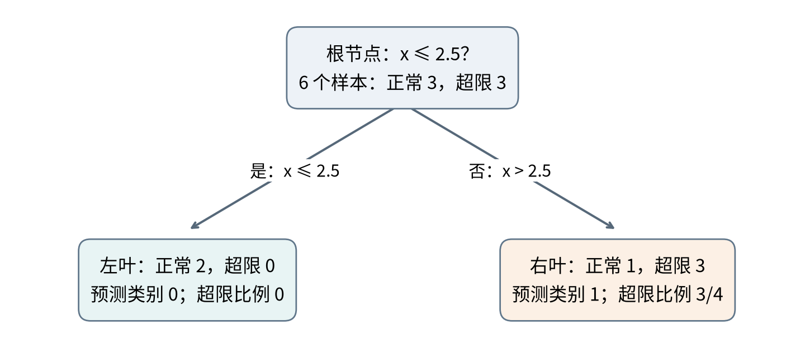

T08 · 机器学习 · 共同理论 · 2 学时
沿条件预测 → 衡量节点不纯度 → 比较划分 → 继续生长并约束 → 验证选择深度
先判断特征是否满足 ：
满足条件：走左边
否则：走右边
到达叶节点：输出预测
最上方是根节点；提出条件的是内部节点；不再分裂的是叶节点。
左边对应条件成立，是本章使用的约定。
例如：先判断负荷是否较高，再在高负荷分支判断环境指数。
预测只读取输入，不需要先知道真实类别。
| 节点训练标签 | 多数类输出 | 节点特性 |
|---|---|---|
| 全部正常 | 正常 | 纯节点 |
| 99 正常、1 超限 | 正常 | 少量混杂 |
| 50 正常、50 超限 | 需要并列规则 | 两类均衡混杂 |
这些描述的是当前训练标签，尚未评价新对象。
两类比例为 ，且 ：
它不是叶节点采用多数类输出时的误判率。
样本更多的子节点，对整体混杂应占更大权重。
同一父节点下，加权不纯度越低，下降量越大。
约 11 分钟 · 沿用讲义六条抽象记录
| 样本 | A | B | C | D | E | F |
|---|---|---|---|---|---|---|
| 1 | 2 | 3 | 4 | 5 | 6 | |
| 0 | 0 | 1 | 1 | 0 | 1 |
分别尝试 与 。
写出左右标签、子节点 Gini、加权结果与下降量，再作选择。
为什么左右人数不同时，不能直接等权平均？
左组 [0,0]，右组 [1,1,0,1]；父节点两类各 3 条。
左组 [0,0,1]，右组 [1,0,1]；两边 Gini 都为 。
| 阈值 | 加权 Gini | 下降量 |
|---|---|---|
| 2.5 | ||
| 3.5 |
在这两个候选中选择 2.5；没有宣称已经枚举所有阈值。
阈值 2.5 时右组占 ，不能只给它 权重。
约 5 分钟 · 根按 分裂，叶按训练多数类预测
| 输入 | 到达哪个叶？ | 预测类别 |
|---|---|---|
| 2 | 待判断 | 待判断 |
| 2.5 | 待判断 | 待判断 |
| 5 | 待判断 | 待判断 |
E 的 、标签为 0：预测错误是否意味着规则执行错误？
右叶的超限比例是多少？特征阈值与概率阈值有何不同？

输入 2、2.5 到左叶，输出 0；输入 5 到右叶，输出 1。
叶内频率是概率估计，不证明未来每个对象的真实风险恰好为 75%。
| 界限 | 作用于 | 决定 |
|---|---|---|
| 特征阈值 2.5 | 输入 | 进入哪个分支 |
| 概率阈值 0.5 | 正类概率 | 输出哪个类别 |
右叶 ：概率阈值为 0.5 时输出 1，改为 0.8 时输出 0。
这个改动没有移动树中的特征分裂界限。
这种逐步选择叫贪心划分；局部最好一步，不保证整棵树全局最优。
输入完全相同却标签不同，可能无法再按这些输入区分。
根深度为 0；经过一条分支，深度加 1。
| 最大深度 | 一条预测路径最多判断 |
|---|---|
| 1 | 1 次 |
| 3 | 3 次 |
最大深度是上限，不要求每条路径都长到同样深度。
对 E 的 ，可以走过以下路径：
→ → → 正常叶
对应每一步的节点深度：0 → 1 → 2，最终叶深度为 3。
这能把 E 单独识别出来，但狭小正常区域反映的是规律还是偶然细节？六条训练记录不能回答。
4 条记录中改 1 个标签，正类比例变化幅度为 ；2 条中改 1 个，变化为 。
这里用前两种约束；不展开剪枝算法。
约 5 分钟 · 独立假设表，与六条记录和实验输出无关
| 最大深度 | 平均训练准确率 | 平均折内验证准确率 |
|---|---|---|
| 1 | 0.72 | 0.70 |
| 3 | 0.90 | 0.78 |
| 8 | 1.00 | 0.71 |
按验证均分选谁？最小叶样本数为 2，会排除什么划分？
“不用标准化，所以填补可在全开发集提前拟合”，对吗？
选择深度 3，验证均分 0.78，高于深度 8 的 0.71。
深度 8 训练满分，却未改善当前验证表现，提示可能过度适应训练细节。
每叶至少 2 条，会排除产生单条记录子叶的划分。填补仍须按当前折训练部分拟合。
分组、子节点类别计数与 Gini 都没有改变。
各折训练部分估计填补值 → 训练当前深度的树 → 在对应验证部分算准确率
用于选择的均分仍不是独立最终测试成绩。
固定课堂数据，120 行开发集；不是纸笔 C 的假设表：
| 最大深度 | 平均训练准确率 | 平均折内验证准确率 |
|---|---|---|
| 1 | 0.7708 | 0.7083 |
| 3 | 0.8292 | 0.6833 |
| 5 | 0.9083 | 0.6333 |
这三个参考候选中选深度 1。验证方法可以迁移，“中等深度胜出”不能预定。
把特征阈值从 2.5 改成 3.5；先预测哪些训练记录换边。
静态核对：2.5 时左 [0,0]、右 [1,1,0,1]；3.5 时左 [0,0,1]、右 [1,0,1]。只改变边界，不是完整的树训练程序。
新的合成任务：开工前，根据计划负荷、温度设置与材料评分，预测完工后是否质量不合格。
先在持续使用的项目 Notebook 写清：
本阶段只做计划，不要求立即训练新项目模型或另交长报告。
B04 完成有限深度比较；T09—T10 再组合多棵树。
纸笔 D · 独立作答 · 约 4 分钟
使用前预测当天是否报修；两个候选共用相同三折及准确率。
| 最大深度 | 平均训练准确率 | 平均折内验证准确率 |
|---|---|---|
| 2 | 0.88 | 0.81 |
| 7 | 0.99 | 0.74 |
机器学习 · T08